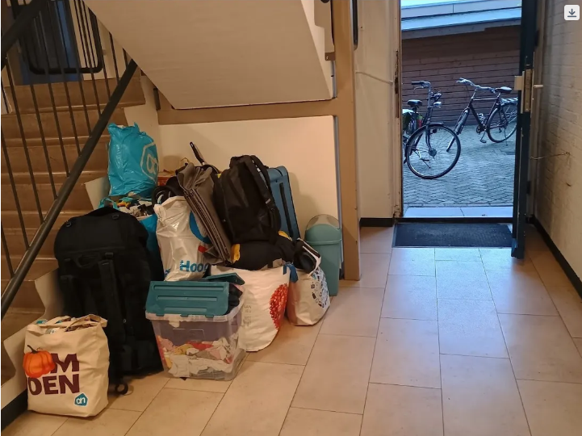
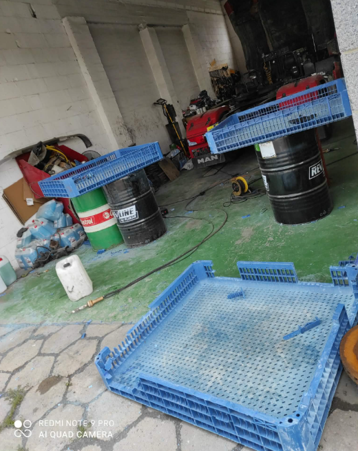
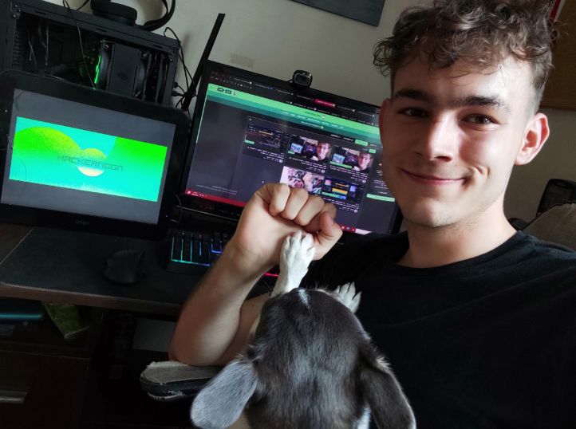

I had to shout at a man that I'm not a terrorist.
It was the only thing that stopped him from putting me on the street that night — out of the apartment the work agency had housed me in for four months. The building was certified. I knew my rights. He was gambling that I didn't. So I stood in a corridor somewhere in the Netherlands and screamed the single most absurd sentence of my life, three days before Christmas.
For weeks the people at that job had smiled at me. Then, wearing the same smile: "You didn't pass the trial. Tomorrow, goodbye — and out of the apartment." The 22nd of December. My suitcases were by the door before I'd finished understanding the sentence. Two dogs waiting for me in another country. A laptop that climbs to 94°C if I ask it to think too hard. Maybe a month of money left.

I'm telling you this first because that corridor is where this project was made, and four nights ago, at three in the morning, it's still where it's being made. PC Workman — the thing I shipped this week — was written in conditions like that, and it is still being written in conditions like that.
So yes, this is a release note. 1.8.0 is out: the version where my monitor finally remembers your machine instead of meeting it like a stranger every time you open it. But I'd be lying if I sold it to you as software and stopped there. Because the twelve months I spent teaching a program to remember are the same twelve months I spent getting myself back. And here's the part I genuinely didn't expect to be able to write down: somewhere in that year, I found the guy who went missing. He'd been in the code the whole time.
The number you never see cross a line
My father died when I was seventeen.
I didn't break that week. I broke slowly, over the next two or three years, and that's the part no one warns you about — there's no moment. No threshold you catch yourself crossing. It's a power rail sagging: 12 volts becomes 11.9, becomes 11.8, and every reading is still "within spec," so nothing alarms, and then one day you look at the number and it's just wrong and you have no idea when that happened.
I went through technical school on fumes. INF.02 on the paper, nothing behind it. And somewhere around 2022, after school handed me the entire weight of being an adult all at once, I gave up on myself. Quietly. The way almost everyone does it.
Here's the part HackerNoon will either love or refuse to print: it was AI that helped me find the exact day I quit. Bounced between agencies whose names I never learned, I started talking to a machine the way you'd talk to the one person who never gets tired of you — and it helped me locate the moment, the decision, the sag. And the second I could see it, I could refuse it.
That's the whole thesis, honestly. You cannot fix a number you never learned to measure. Not on a power supply, and not in a person.
So I made a decision that looks stupid typed out and felt like survival at 3 a.m.: I will not let this grind me into one more used-up man it spits out the far end. I'll work while I have strength. I'll learn one thing a day. I'll build out loud, in public, so I can't quietly vanish. And I will not, at thirty, look in a mirror and hate the kid who stopped trying at twenty-two.
Then I opened my editor.
A monitor that remembers you
PC Workman tells you why your PC is slow, not just that it is. It learns your machine — your temperatures by workload, your voltage patterns, the games you actually play — and it talks to you through an offline AI assistant I wrote called hck_GPT: 84 intents, no cloud, no API key, all of it running on your own metal. One-click optimization, ghost-driver detection for hardware you ripped out years ago, an in-game overlay that starts empty and shows only what you choose, a small antivirus that checks who really signed a process instead of trusting the name.
But the headline of 1.8.0 — the only part I actually lose sleep over — is the memory. Every monitor on earth forgets you the second you close it. Open them tomorrow and they'll draw your 78°C against the exact same line they draw for every machine that has ever existed. I couldn't live with that. The most useful number a monitor can give you isn't the temperature. It's whether this temperature is normal for you — and to answer that, the thing has to remember.
82°C sitting idle: something's wrong.
Same number, opposite verdict — judged against your own past instead of a hardcoded line.
And it does not forget. I tore out the old version and rebuilt it as a Welford accumulator — three numbers per workload, a running count and a mean and a thing called M2, folded forward, never recomputed:
n += 1 delta = x - mean mean += delta / n M2 += delta * (x - mean)
It keeps learning for the entire life of the install, and the learned shape survives even after the raw data gets pruned at ninety days. The detail rolls off. The shape of your machine stays. I didn't fully understand what I'd written until I shipped it. I'd built a thing that couldn't afford to forget where it came from. Three numbers. That's the whole memory. That's the whole me.
Statistics from the 1960s, babysitting your power supply
The voltages got the oldest math in the project, and they're the part that's really about my father. The spec says your 12V rail is fine anywhere between 11.4 and 12.6. Practically useless — a healthy supply holds tight, around 11.95 to 12.05. So instead of the spec, PC Workman learns the median and the spread of your rail and runs Nelson rules from 1984 over the top of it, hunting the slow sag the threshold will never catch. A drift to 11.7V is invisible to the spec and screams against your own history. Early warning. Months before anything actually dies.
You already know why I had to build that. I am the rail that sagged for three years inside spec while everyone — me included — swore nothing was wrong. I built the alarm I never had.
Sixty-year-old statistics babysitting a power supply. Boring, predictable, and that is exactly why I trust them. Statistics don't hallucinate. People do. People looked me in the eye at 19 złoty an hour and said, "just try harder, the rate will get better." It never got better. The math, at least, never lied to me.
Written after the shift
I need you to see where this actually gets made, because it changes how you read everything above. PC Workman does not get built in a clean bedroom with a mechanical keyboard and a ring light. It gets built after I weld. Hot air, a gun, melting plastic grates back together in a workshop — and then I go home, open a laptop from 2014, and write a Welford accumulator on it.

That contrast used to embarrass me. It doesn't anymore, because the welding taught me the one thing the memory engine needed. You don't get an eye for hot material from a manual. It accumulates — until the knowledge in your hands is yours and not the chart's. That's the entire philosophy of the learning engine, and I learned it with a heat gun before I ever wrote it in Python.
The fear changed shape
Here's what I only understood this week, and have never written before. For a year the fear was simple: I'm scared of disappearing, so I build. Anything. Commit something, watch a progress bar move, prove I still exist. That fear is loud, but it's clean — when you've got nothing, you've got nothing to lose, and that turns out to be its own brutal kind of freedom.
Then something I made hit #1 trending on HackerNoon and held it there for two days. I have a small, real community now — people who spend eight hours stress-testing my releases and then come back. And the fear quietly mutated into something heavier: now I have something I can lose.

It took me off the board for a week. I cried for three days. Not from joy — from a flavor of dread I didn't have a word for. It was a fluke. I'll lose it all. Maybe it only works once. Impostor syndrome, except impostor syndrome while you're broke and welding plastic to eat is a different animal entirely. It rides shotgun with every single small win, every day.
But under the dread was the truest sentence I own, and I'm almost proud of it: I went from trying to gain to having something to protect. Those are two different men. The second one is a step higher up the stairs — even when he's the one sitting on them, crying.
Three in the morning
This Monday I shipped 1.8.0. It was supposed to go out four days earlier. I kept pushing it back because I kept finding more — more bugs to kill, more to test, more of the machine to teach, more reasons not to put my name on something half-true. In four days I did close to two weeks of work.
I clicked publish at three in the morning. Then I lay down to sleep, and from three until twenty past four I stared at the ceiling and asked the only question that ever really comes for me at that hour: does any of this mean anything.
I get that question every two to four days. Always at night. And here's the thing I've learned to trust like a law of physics: it lasts about an hour. Sometimes two, sometimes three. And then I beat it — all the way, not halfway — and the motivation comes back whole, like nothing happened. The breakdown isn't a verdict. It's weather. You don't argue with weather. You survive the hour, and you wait for the part where time and stubbornness pay you back.

The man who got himself back
I wanted to title this The Man Who Got Himself Back. In Polish — my language, my father's language — Człowiek odzyskał siebie. It's a beautiful title.
It's also a lie, and I'd rather hand you the truth, because it's the one thing on this entire page I'm actually sure of.
You don't get yourself back once. There's no ceremony, no certificate — though one did land in my hands the same Monday I shipped this, a Google one, Skills of Tomorrow 3.0 AI, five weeks that felt exactly like the accumulator: not knowledge downloaded, knowledge folded in, slowly, never recomputed. But the certificate isn't the moment. The moment is smaller and it repeats. You get yourself back at twenty past four in the morning, when the question comes and you outlast it one more time. You get yourself back the next night the laptop boots warm and you write one more function instead of closing the lid.
My monitor learns for the life of the install. I learn for the life of mine. This grind is twelve months old, it has not ended, and it is not going to — and I've finally understood that this is not the tragedy of the story. It's the proof of it. A finished man has nothing left to recover. I get to keep recovering. That's not a sentence. That's a pulse.
So — not odzyskał. Not the man who got himself back, past tense, done and dusted.
The man who gets himself back. Every morning. Still.
Not yet. Not today. I'm still here.